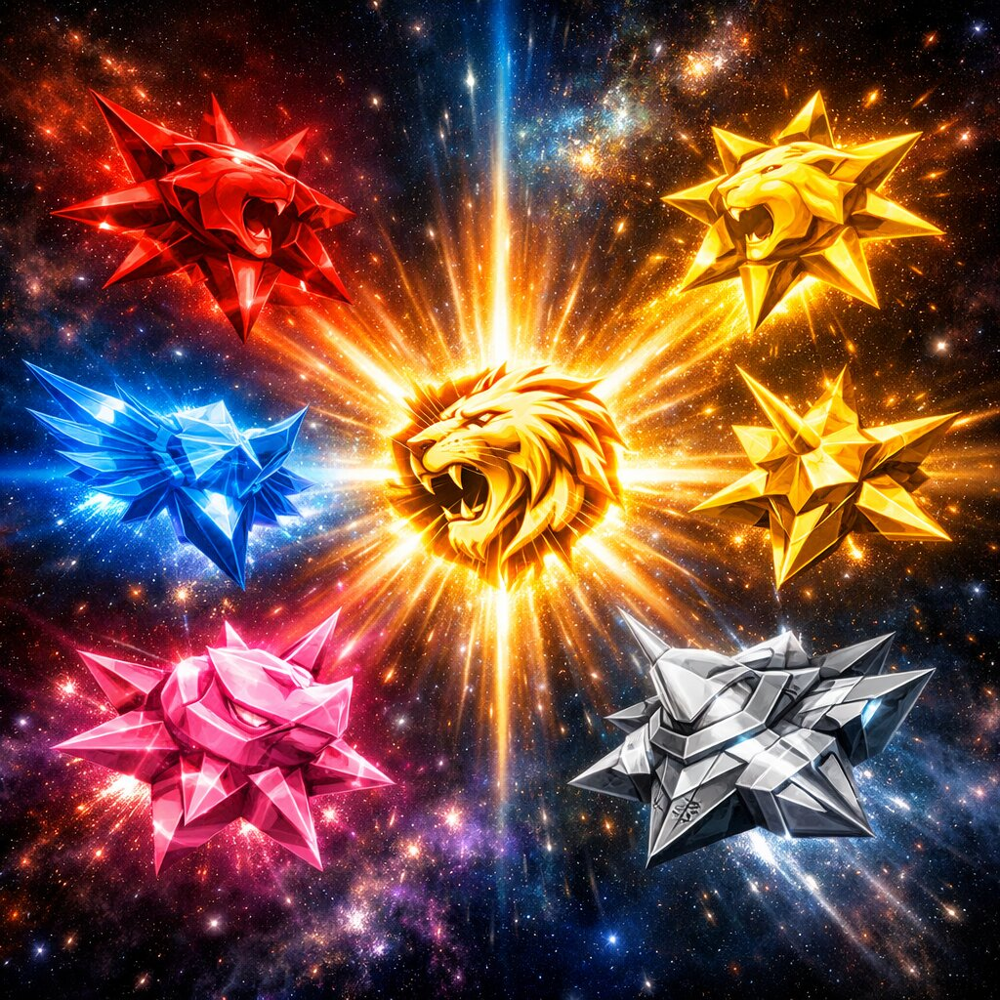

The IDAI Power Rangers command six advanced Guardian Zords, each representing the unique strengths of its Ranger while operating as an independent AI-powered combat machine. The Panther Zord excels in speed and leadership, the Leopard Zord specializes in precision and agility, the Rhino Zord delivers overwhelming defensive power, the Unicorn Zord harnesses pure energy and support capabilities, the Tank Zord provides unmatched firepower and resilience, and the Flying Wolf Zord dominates aerial reconnaissance and rapid-response missions. During global emergencies, all six Zords synchronize through the Cragnon Command Nexus and combine flawlessly to form the legendary Mega Zord, humanity's ultimate guardian, capable of confronting threats beyond the power of any individual Zord.
IDAI Power Rangers Zords: Always Ready to operate
The IDAI Power Rangers Zords are colossal mechanical guardians forged in the Morphex Tower and infused with cosmic energy from Proxima Centauri, each representing the spirit of an animal or machine while embodying the essence of their Ranger. The Red Panther Zord strikes with agility and courage, moving swiftly across battlefields to protect allies. The Yellow Lioness Zord radiates loyalty and resilience, roaring with protective strength to shield communities. The Blue Eagle Zord soars high with wings of wisdom and foresight, scanning the skies and guiding missions with clarity. The Pink Rhino Zord charges forward with compassion and balance, using its immense power to break barriers and restore harmony. The Gold Unicorn Zord shines with brilliance and supremacy, illuminating paths of progress and inspiring hope. The Steel Tank Zord fortifies defenses with innovation and durability, standing as an unbreakable wall against threats. Together, these Zords unite into the Atomic Beast Bluster, a supreme Megazord engraved with the Roaring Lion emblem, channeling cosmic energy into protective waves that safeguard humanity’s dignity and eternal supremacy.
Zord Stars: Cosmic Hearts of Supremacy

The Zord Stars are radiant emblems forged in the Morphex Tower, each infused with cosmic energy from Proxima Centauri and engraved with the Roaring Lion symbol to embody courage, honor, and eternal supremacy. They serve as the living hearts of the colossal Zords, channeling their essence into light and power. The Red Panther Star glows crimson with agility and courage, the Yellow Lioness Star shines golden with loyalty and resilience, the Blue Eagle Star radiates azure brilliance with wisdom and foresight, the Pink Rhino Star pulses with soft pink compassion and strength, the Gold Unicorn Star gleams supreme with brilliance and hope, and the Steel Tank Star glows silver-gray with resilience and innovation. When united, these six Zord Stars converge into a single burst of cosmic light, forming the supreme Megazord Star that amplifies their collective strength. More than weapons, they are symbols of unity and guardianship, ensuring IDAI’s mission of dignity and humanity endures eternally.
The Red Ranger Panther Zord
The Red Ranger Panther Zord is the official guardian machine assigned exclusively to the Red Ranger, serving as the symbol of leadership, courage, and unwavering responsibility within the IDAI Power Rangers. Inspired by the agility and strength of a panther, this advanced combat and rescue platform combines extraordinary speed with exceptional precision, allowing it to navigate complex environments across land, mountains, urban areas, and hostile terrain. Powered by an advanced quantum energy core and guided by intelligent autonomous systems, the Panther Zord supports humanitarian operations, emergency response missions, and planetary defense while maintaining complete synchronization with its Red Ranger pilot.
Constructed using ultra-durable futuristic alloys and next-generation artificial intelligence, the Red Ranger Panther Zord features adaptive armor, enhanced mobility systems, powerful sensor arrays, and high-capacity energy reserves for extended missions. Its sophisticated command interface enables seamless coordination with the other Guardian Zords, allowing them to unite into the legendary IDAI Super Mega-Zord whenever extraordinary challenges arise. Beyond its remarkable technological capabilities, the Panther Zord represents the spirit of noble leadership, discipline, and selfless service, reminding every Power Ranger that true power exists to protect humanity, preserve peace, and inspire hope for future generations.
Blue Ranger Leopard Zord
The Blue Ranger Leopard Zord is the official guardian machine assigned to the Blue Ranger, representing intelligence, precision, adaptability, and exceptional speed. Inspired by the remarkable agility and awareness of a leopard, this advanced Zord is engineered for reconnaissance, rapid deployment, rescue coordination, and tactical support across diverse environments. Its high-performance mobility system enables swift movement through forests, mountains, urban landscapes, deserts, and other challenging terrain while maintaining outstanding stability and control. Equipped with a quantum-powered energy core and intelligent navigation systems, the Leopard Zord assists the Blue Ranger in protecting civilians and completing missions with remarkable efficiency and reliability.
Built using next-generation composite alloys and sophisticated artificial intelligence, the Blue Ranger Leopard Zord features adaptive armor, advanced environmental sensors, long-range communication equipment, and autonomous decision-support capabilities that enhance every humanitarian and security operation. Its seamless compatibility with the other Guardian Zords allows it to combine into the legendary IDAI Super Mega-Zord whenever extraordinary circumstances demand the united strength of the entire ranger team. Beyond its technological excellence, the Leopard Zord symbolizes wisdom, discipline, teamwork, and strategic thinking, inspiring every guardian to serve humanity with responsibility, innovation, courage, and an unwavering commitment to peace.
Yellow Ranger Wolf Zord
The Yellow Ranger Wolf Zord is the fastest aerial Guardian Zord in the IDAI Power Rangers fleet, combining the instincts of a wolf with the freedom of flight. Equipped with advanced mechanical wings and powered by a Proxima Centauri quantum energy core, it can soar above futuristic cities, oceans, mountains, and remote landscapes with remarkable speed and precision. Its lightweight yet resilient armor, intelligent navigation system, and agile maneuverability allow the Yellow Ranger to respond rapidly to emergencies while maintaining complete control in both atmospheric and high-altitude missions.
Coordinated by the Cragnon Command Nexus, the Wolf Zord serves as an essential guardian for reconnaissance, rapid deployment, humanitarian support, and aerial protection. Its adaptive flight systems and AI-assisted sensors continuously monitor the surrounding environment, ensuring every mission is carried out safely and efficiently. When greater strength is required, the Wolf Zord synchronizes seamlessly with the Panther, Leopard, Rhino, Unicorn, Tank, and Dragon Zords to help form the legendary Dragon Mega-Zord, demonstrating the unity and technological excellence of the IDAI Power Rangers.
Gold Ranger Unicorn Zord
The Gold Ranger Unicorn Zord is the symbol of hope, compassion, and unwavering guardianship within the IDAI Power Rangers. Inspired by the legendary unicorn, this advanced Guardian Zord combines graceful flight with extraordinary strength, enabling it to protect civilians during emergencies and humanitarian missions. Its radiant golden armor, intelligent support systems, and precision mobility allow the Gold Ranger to reach disaster zones quickly, providing assistance while ensuring the highest level of safety for those in need.
Operating under the guidance of the Cragnon Command Nexus, the Unicorn Zord is equipped with advanced quantum technology, adaptive defensive armor, and clean Proxima Centauri energy systems for continuous operation. Beyond its remarkable engineering, it serves as a reassuring presence that inspires confidence wherever it appears. Whether conducting rescue operations, delivering humanitarian aid, or joining the Panther, Leopard, Rhino, Wolf, Tank, and Dragon Zords in larger missions, the Unicorn Zord reflects the IDAI Power Rangers' enduring commitment to protecting humanity through courage, innovation, and compassion.
Pink Ranger Rhino Zord
The Pink Ranger Rhino Zord is the defensive powerhouse of the IDAI Power Rangers, engineered to protect lives with exceptional resilience and unwavering determination. Inspired by the mighty rhinoceros, this Guardian Zord features reinforced quantum armor, immense physical strength, and remarkable stability, allowing it to operate safely in urban environments, disaster zones, and challenging terrain. Its powerful charging capability and precision control enable the Pink Ranger to clear debris, create safe evacuation routes, and shield civilians from danger while maintaining the highest standards of humanitarian protection.
Guided by the Cragnon Command Nexus, the Rhino Zord utilizes advanced AI systems, clean Proxima Centauri energy, and intelligent environmental sensors to support emergency response missions with outstanding efficiency. Built to endure the most demanding conditions, it serves as a symbol of courage, compassion, and reliability. Whenever greater strength is required, the Rhino Zord synchronizes seamlessly with the Panther, Leopard, Wolf, Unicorn, Tank, and Dragon Zords to help form the legendary Dragon Mega-Zord, reinforcing the united mission of the IDAI Power Rangers to safeguard humanity.
Grey Ranger - Tank Zord
The Grey Ranger Tank Zord is the ultimate heavy assault and defensive machine of the IDAI Power Rangers. Designed to withstand overwhelming enemy attacks, this armored guardian combines the resilience of a battle tank with the mobility of a powerful mechanical beast. Its reinforced alloy plating, advanced missile systems, high-energy plasma cannon, and adaptive defense shields allow it to secure strategic locations while protecting both civilians and fellow Rangers during the most dangerous missions.
Controlled through the Cragnon Command Nexus, the Tank Zord specializes in frontline combat, disaster containment, and fortress defense. Its precision targeting system can neutralize large threats while minimizing damage to surrounding infrastructure. When combined with the other Ranger Zords, it forms the armored foundation of the legendary Dragon Mega Zord, providing unmatched stability, firepower, and protection in humanity's greatest battles.
Rangers Special Off-Road Vehicle
The Rangers Special Off-Road Vehicle is the primary rapid-response transport of the IDAI Power Rangers, engineered for speed, stability, and versatility across every environment. Whether navigating futuristic city streets, rugged mountain terrain, dense forests, deserts, or disaster-stricken regions, the vehicle delivers exceptional performance while ensuring the safety of its crew. Its advanced suspension, reinforced armor, and intelligent navigation systems enable the Rangers to reach critical locations quickly and efficiently whenever humanity requires their assistance.
Powered by a next-generation clean quantum energy system and supervised by the Cragnon Command Nexus, the vehicle combines cutting-edge technology with reliable operational capability. It features autonomous driving assistance, secure communication links, emergency medical equipment, and advanced defensive protection, allowing the Rangers to respond confidently to missions without unnecessary delay. More than a high-performance vehicle, it represents the IDAI Power Rangers' unwavering commitment to rapid humanitarian response, technological excellence, and the protection of people around the world.
Megazord: Supreme Fusion of Cosmic Power
The Megazord is the ultimate manifestation of the IDAI Power Rangers’ unity, forged when all six Zords converge into a single colossal warrior. Rising from the Morphex Tower, it embodies courage, wisdom, loyalty, compassion, brilliance, and resilience in one supreme form. The Red Panther forms the agile core, the Yellow Lioness provides the sturdy frame, the Blue Eagle spreads wings of foresight, the Pink Rhino anchors strength and balance, the Gold Unicorn crowns the fusion with radiant supremacy, and the Steel Tank fortifies the foundation with indestructible armor. At its chest glows the Lion Emblem, roaring with cosmic energy from Proxima Centauri, channeling protective waves across the battlefield. The Megazord wields the Atomic Beast Bluster, a weapon engraved with the Roaring Lion symbol, capable of unleashing devastating yet dignified power to safeguard humanity. More than a machine, it is a living symbol of unity, guardianship, and eternal supremacy, proving that legends never die under the banner of IDAI.
Megazord Star: Eternal Core of Supremacy
The Megazord Star is the supreme emblem of unity, forged from the fusion of all Zord Stars yet destined to resonate most powerfully with the Red Ranger, the team’s leader and symbol of courage. Radiating a crimson aura at its core, it embodies speed, vision, and the unyielding responsibility carried by the commander. Surrounding this fiery heart are blended rays of golden loyalty, azure wisdom, pink compassion, silver resilience, and supreme brilliance, all converging into one eternal burst of cosmic energy. The Roaring Lion emblem engraved at its center roars with power from Proxima Centauri, amplifying the Red Ranger’s leadership and channeling protective waves across the battlefield. More than a weapon, the Megazord Star is the living soul of the Atomic Beast Bluster, binding the Rangers to their oath: “The Responsibility We Bear Is Great.” It ensures that the Red Ranger leads not with dominance, but with dignity, guardianship, and eternal supremacy, proving that legends never die.